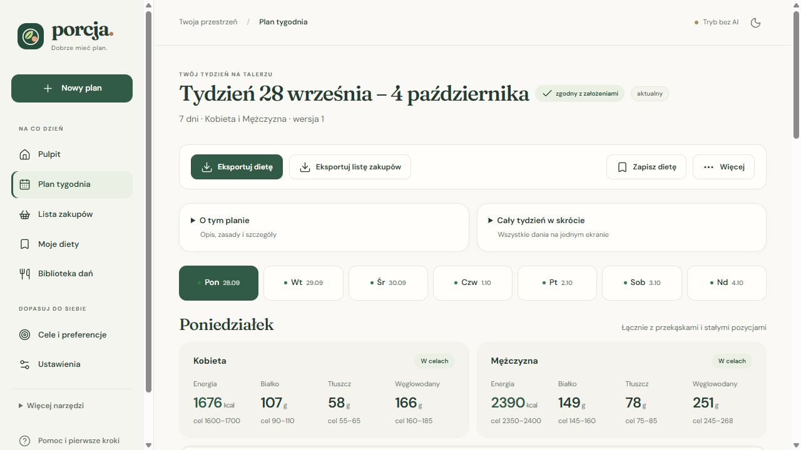

Bezpłatny planer posiłków · Windows · po polsku
Jadłospis na cały tydzień i jedna lista zakupów
Porcja układa posiłki, dobiera porcje osobno dla każdej osoby i liczy kalorie oraz makro. Działa na Twoim komputerze — bez konta, abonamentu i obowiązkowego AI.
Windows 10/11 (x64). Instalator nie jest jeszcze podpisany certyfikatem, więc Windows może pokazać ostrzeżenie SmartScreen. Pobieraj go tylko z oficjalnych wydań i sprawdź sumę SHA-256.

Jak to działa
Trzy kroki od pustej kartki do gotowej listy zakupów. Podstawowe planowanie nie wymaga internetu ani klucza AI.
Ustaw cele
Wybierz dietę (tradycyjna, wegetariańska albo wegańska), dzienne widełki kcal i makro dla każdej osoby oraz zakazy. Nie znasz celów? Opcjonalny kalkulator podpowie wartości orientacyjne.
Ułóż tydzień
Kliknij „Ułóż mój plan”. Program wybiera dania z biblioteki blisko 700 przepisów i dobiera gramatury tak, by każdy mieścił się w swoich widełkach.
Gotuj i kupuj
Dostajesz plan z przepisami oraz jedną listę zakupów z połączonymi produktami. Odhaczaj w aplikacji albo zapisz oba dokumenty do plików TXT.
Ten sam posiłek, inne porcje
Fragment prawdziwego planu ułożonego przez program bez AI (na przykładowych ustawieniach startowych — to nie jest zalecenie żywieniowe).
| Śniadanie: kanapka z kurczakiem teriyaki | Kobieta | Mężczyzna |
|---|---|---|
| Pierś z kurczaka (surowa) | 90 g | 140 g |
| Bułka pszenna | 80 g (≈ 1½ szt.) | 120 g (≈ 2 szt.) |
| Sos sojowy | 10 g | 20 g |
| Ogórek świeży | 30 g | 50 g |
| Cały dzień (z przekąską i stałymi pozycjami) | 1666 kcal | 2387 kcal |
| Widełki tej osoby | 1600–1700 kcal | 2350–2400 kcal |
Białko, tłuszcze i węglowodany są liczone osobno i też sprawdzane względem widełek. Gdy czegoś nie da się spełnić, plan dostaje czytelne uwagi zamiast „cichego” wyniku.
Liczby liczy kod, nie AI
Silnik i weryfikator
Solver OR-Tools CP-SAT dobiera gramatury, a osobny weryfikator przelicza cały plan od zera z tabel produktów (m.in. BLS 4.0). To jego liczby widzisz w aplikacji.
AI tylko na życzenie
Własny klucz DeepSeek dodajesz wyłącznie wtedy, gdy chcesz czatu, życzeń pisanych zwykłym językiem lub nowych dań. Model nie podaje kalorii ani gramów. Koszt API rozliczasz u dostawcy.
Wartości pochodzą z tabel i etykiet, więc są szacunkiem — konkretny produkt ze sklepu może się różnić. Porcja nie jest wyrobem medycznym i nie zastępuje lekarza ani dietetyka.
Dla kogo
- Dla dwóch osób przy jednym stole: wspólne dania, ale osobne gramatury dla każdej z nich.
- Dla tych, którzy mają dość Excela i kartek: jeden tydzień, jedna lista zakupów.
- Dla jedzących wegetariańsko i wegańsko: zgodność diety jest sprawdzana na poziomie składników.
- Dla cenących prywatność: plany zostają na Twoim komputerze, bez konta i telemetrii.
Czego tu nie ma
- Wersji na telefon, Maca ani Linuxa — instalator jest tylko dla Windows 10/11.
- Dziennika jedzenia i skanera kodów kreskowych.
- Podpisu instalatora certyfikatem — dlatego SmartScreen może pokazać ostrzeżenie.
- Porad zdrowotnych: przy szczególnych potrzebach żywieniowych używaj celów ustalonych indywidualnie.
Najczęstsze pytania
Ile to kosztuje?
Nic. Aplikacja jest bezpłatna i nie ma abonamentu. Jedyny możliwy koszt to opcjonalne AI: własny klucz DeepSeek rozliczasz u dostawcy. Bez klucza planowanie, zakupy i eksporty działają normalnie.
Gdzie są moje dane?
Na Twoim komputerze, w folderze %LOCALAPPDATA%\DietBot. Porcja nie ma konta, telemetrii ani synchronizacji w chmurze. Tylko jeśli włączysz AI, kontekst zadania trafia do DeepSeek; opcjonalny bot Telegram korzysta z usługi Telegram. Klucz API jest zapisany lokalnie jawnym tekstem w pliku .env, więc nie udostępniaj tego folderu.
Czy potrzebuję internetu?
Do planowania, listy zakupów i eksportu nie. Internet jest potrzebny do pobrania instalatora oraz do opcjonalnych funkcji AI i Telegrama.
Dlaczego Windows pokazuje ostrzeżenie?
Instalator nie jest podpisany certyfikatem, więc Windows traktuje go jak plik od nieznanego wydawcy. Pobieraj go wyłącznie z oficjalnych wydań i porównaj sumę SHA-256 z plikiem SHA256SUMS.txt dołączonym do wydania. Kod jest publicznie dostępny, a instalator możesz zbudować samodzielnie.
Czy to zastępuje dietetyka?
Nie. Porcja nie jest wyrobem medycznym. Cele startowe są przykładem, kalkulator jest orientacyjny, a program nie bilansuje wszystkich witamin, minerałów i alergenów. Szczegóły w README.